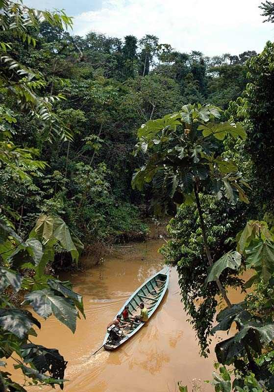

Región Norte de Brasil

La region Norte de Brasil es la mas grande en terminos de area, ocupando un poco mas del 45% del territorio nacional, gracias a la selva Amazonica. Ademas, su geografia esta compuesta principalmente por mesetas,
llanuras y depresiones naturales.
A pesar de que mas de 18 millones de personas viven en el Norte de Brasil, la poblacion esta desigualmente distribuida. Esto se debe principalmente a la densa vegetacion y a la presencia de la selva. Sin embargo,
otro factor importante es que la mayoria de los habitantes eligen vivir a la orilla de los rios. La falta de infraestructura en comparacion con otras regiones de Brasil hace que los pobladores del Norte dependan en
gran medida del transporte fluvial.
Despues de los años 70, la mineria y la agricultura comenzaron a expandirse en la Region Norte. Esto hizo que la region se convirtiera en la segunda con mayor tasa de crecimiento poblacional en Brasil. Ademas, el Norte
tambien es un importante centro industrial, albergando grandes empresas multinacionales.
En cuanto a la cultura, la Region Norte es el escenario de algunas de las festividades mas importantes de Brasil, como el
Cirio de Nazaré
y el
Festival de Parintis
Estados de la region Norte:
| Estados |
Capitales |
| Acre |
Rio Branco |
| Amapá |
Macapá |
| Amazonas |
Manaus |
| Pará |
Belém |
| Rondonia |
Porto Velho |
| Roraima |
Boa Vista |
| Tocantins |
Palmas |
Datos de la region Norte
| Área |
3,853, 575 km² |
| Población |
18,430,980 |
| Ciudad más grande |
Manaus |
| Clima |
Equatorial |
| Bioma |
Amazon Rainforest |
| Economía principal |
Mining, agriculture, energy production, electronic manufacturing, extractivism |
| Comida tradicional |
Tacacá, Manicoba, Pato no Tucupi, Cartola |